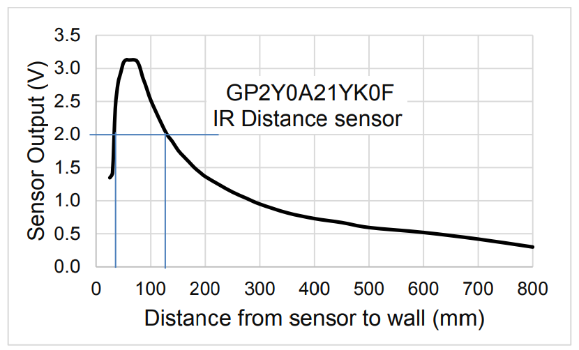
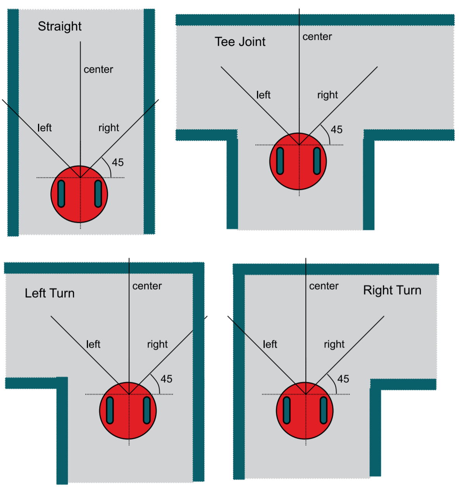
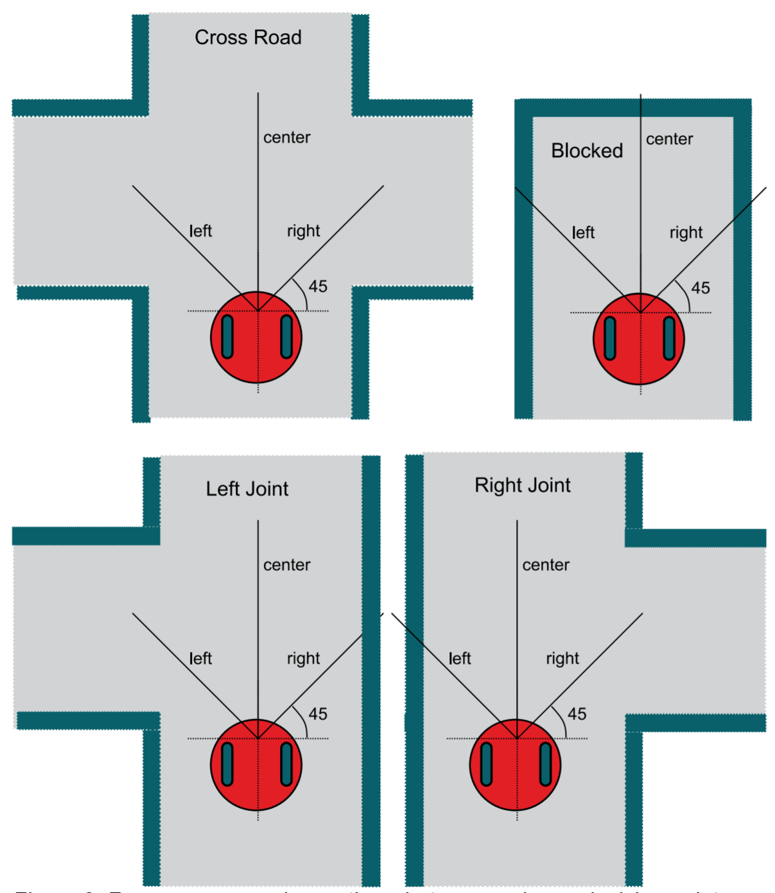

🔬 Lab 15 ADC#
📌 Objectives#
Students should be able to implement the ADC module to input analog data into the microcontroller.
Students should be able to use periodic interrupts to sample the ADC at a regular rate.
Students should be able to develop a function in C that converts raw ADC samples to distances.
Students should be able to evaluate the performance of the data acquisition system.
Students should be able to use an automated test approach called black-box functional testing to verify that their algorithm is operating correctly.
Students should be able to classify the states of the robot using the distance measurements from three sensors.
Note
Before software can be reusable, it first has to be usable.
📜 Synopsis#
In this lab, we will perform the conversion of raw analog-to-digital converter (ADC) samples into distance measurements. We will use three separate conversion functions to process data from three IR distance sensors and calculate distances in millimeters. The IR distance sensors have a range of approximately 70 to 800 mm, with a resolution of about 1 mm at a distance of 200 mm.
The figure below illustrates the relationship between the output voltage of the IR sensor and the distance to the wall. It’s important to note that the sensor’s behavior is non-monotonic. For instance, if the sensor records a value of 2 V, it could correspond to either 30 mm or 120 mm. During the final project, the primary concern is to keep the robot at a safe distance from the wall, so we assume that the sensor distance is always greater than 70 mm. Additionally, given the nature of the maze navigation in the final project, we are not concerned with distances beyond 800 mm.
{kind=link}
We will develop a function that converts raw ADC samples into distance measured from the wall. Let \(n\) be a 14-bit sample from the ADC (0 to 16383), and \(d\) be the distance in mm from the sensor to the wall. Then the distance in mm from the sensor to the wall is given by
In this lab, we will create a function to convert raw ADC samples into distances measured from a wall. Let’s use some variables to represent our measurements:
\(n\) represents a 14-bit sample from the ADC, ranging from 0 to 16383.
\(d\) represents the distance in millimeters from the sensor to the wall.
We’ll calculate \(d\) with the formula:
where \(m\) and \(c\) are calibration coefficients that we will need to find through empirically testing.
Now, let’s consider the distance from the center of the robot to the wall, denoted as \(L\):
where \(r\) is the distance from the center of the robot to the distance sensor. You’ll need to measure this value for each sensor.
Our second task is to classify the robot’s situation based on the readings from three distance sensors: left, center, and right. These sensors measure the distance from the center of the robot to the wall in millimeters. It’s essential to understand that the center of the robot serves as the common reference point for all three sensors.
As the robot approaches a decision point, we’ll need to categorize its situation into one of the eight scenarios shown in the figure below. The variables ‘left,’ ‘center,’ and ‘right’ in the figure represent the respective distances from the center of the robot to the wall.
 {kind=link}
{kind=link}
💻 Procedure#
Complete functions in ADC14.c#
This is part of Homework 15
Complete
ADC0_InitSWTriggerCh17_14_16()andADC_In17_14_16()located in theADC14.cfile.Refer to the instructions provided within the
ADC14.cfile to guide you through the completion of these functions.Copy and paste the code into Gradescope to submit your Homework 15.
Before starting this lab, review the solutions available in Gradescope to confirm that you have the correct code. If the solutions are not published in Gradescope, go through your code with your instructor.
The component block diagram of this lab is shown below.
{kind=link}
Demo Program15_1()#
Important
You should understand the main code provided in every module. No such code will be provided for your final project, and you must write your main.c from scratch.
Finish the implementation of
LCDOut1()in theLab15_ADCmain.cfile.Demo the functionality of
Program15_1()by running it with raw digital sensor values as illustrated below.Disregard the distance values displayed on the LCD screen for this particular section.
Note: The distance sensors are powered by the chassis board.
{kind=link}
Calibrate your sensors#
For each IR sensor, you will empirically determine the two calibration constants (\(m\) and \(c\)). Each sensor will have its own \(m\) and \(c\) constants. To determine these values, go to Calibration.
Complete functions in IRDistance.c#
Implement
LeftConvert(),RightConvert(), andCenterConvert()in theIRDistance.cfile.You should have already determined the calibration coefficients, denoted as \(n\) and $c, in the previous section.
As discussed in the Synopsis section, these functions should return the actual distance, \(L\), from the center of the robot to the wall.
Ensure that if the ADC value is less than the ADC value for 800 mm (e.g., 2244 as shown in the example on the calibration page), your function should return a distance of 800 mm.
Use integer values for all calculations in Code Composer Studio (CCS).
Make use of
enumand#definefor constants rather than hard-coding numbers. Deductions will be made for the use of hard-coded numbers.ADCMAX_xxxxis the ADC value at 800mm.Demo the
Program15_1function running with accurate distance values on the LCD. Utilize distances of 150, 200, 250, and 300 mm for your demo. The error should be less than 50 mm during the demo. You can use one of the paper rulers available in the lab (donated by IKEA) for this purpose. While a live demo is preferred, a video demonstration is also acceptable. If you opt for a video demo, be sure to include your voice to clearly state the distances you are testing.
Write and test the Classify() function.#
Open
Classifier.hunder theincfolder.Add the following state representations to the enumerated type:
ClassificationError = 0
LeftTooClose = 1
RightTooClose = 2
CenterTooClose = 4
Straight = 8
LeftTurn = 9
RightTurn = 10
TeeJoint = 11
LeftJoint = 12
RightJoint = 13
CrossRoad = 14
Blocked = 15
Note
We put the enumerated types in the header file so that any code files that include the .h file can access these constants.
Open the
Classifier.cfile located in the project folder.We will define the bounds using
#defineconstants to enhance the clarity of the classification algorithm. You will have the opportunity to fine-tune these values during the final project to align them with the actual distances within the maze.
#define SIDEMIN 212 // smallest side distance to the wall in mm
#define SIDEMAX 354 // largest side distance to wall in mm
#define CENTERMIN 150 // min distance to the wall in the front
#define CENTEROPEN 600 // distance to the wall between open/blocked
#define IRMIN 50 // min possible reading of IR sensor
#define IRMAX 800 // max possible reading of IR sensor
Develop the following classification algorithm, which will produce the following results:
ClassificationError (0) if any of the sensors report distances less than 50 mm or greater than 800 mm.
LeftTooClose (1) if the left sensor reports a distance less than 212 mm.
RightTooClose (2) if the right sensor reports a distance less than 212 mm.
CenterTooClose (4) if the center sensor reports a distance less than 150 mm.
Combining conditions may result in multiple simultaneous danger states. For example, 5 indicates both CenterTooClose and LeftTooClose, while 7 implies all three directions are too close.
The remaining classifications (Straight (8) - Blocked (15)) depend on the states of the sensors.
First, let’s focus on the center sensor. As the robot approaches an intersection, the center sensor plays a crucial role in distinguishing between two scenarios:
{Blocked, Right Turn, Left Turn, Tee Joint}: When the center sensor measures a distance less than 600 mm.
{Straight, Right Joint, Left Joint, Cross Road}: When the center sensor measures a distance greater than or equal to 600 mm.
It’s important to note that, in scenarios involving long straight roads, there’s no defined maximum acceptable value for the sensors.
For our measurements, we consider a road that is 400 mm wide with side sensors placed at 45-degree angles. When the robot is positioned in the middle of the road in the straight or blocked scenarios, both side sensors placed at 45 degrees should read approximately 283 mm.
If the robot is within 50 mm from the center of the road in the straight or blocked scenarios, the side sensors can measure distances ranging from 212 mm (SIDEMIN) to 354 mm (SIDEMAX). The threshold of 354 mm (SIDEMAX) is used to determine whether it’s feasible to make a left or right turn at the upcoming intersection:
A reading less than 354 mm (SIDEMAX) suggests that the turn path is not feasible.
A reading of 354 mm (SIDEMAX) or higher indicates that the turn path is feasible.
After completing the implementation of the Classify() function in the Classifier.c file, proceed with the following steps.
Open the
Lab15_ADCmain.cfile in the project folder.Scroll down to the
main()function and make sure that the line withProgram15_2()is uncommented while the other two are commented.Add the variables
left,center,right,result,truth, anderrorsto the Expressions tab.Run
main()by selecting the debug tool.Monitor the value of
errors. If it exceeds 0, utilize breakpoints to debug yourClassify()function and observe the program’s state.”
Please note that Program15_2 focuses on testing corner cases. In the context of the Classify() function, there’s a wide range of possible inputs, with each of the three sensors varying from 50 to 800. This results in a total of \(751^3\) possibilities, which is equal to 423,564,751 unique inputs. While an exhaustive test (Program15_3) would cover all these inputs, the nature of the problem allows us to significantly reduce the number of test values while retaining testing accuracy. This reduction is achieved by strategically selecting test values around the threshold points. This practice, known as testing “corner cases,” enables us to minimize the number of test values from \(751^3\) to just 18. Specifically, we will test values that are within \(\pm 1\) of the threshold values, which include 50, 150, 212, 354, 600, and 800.
Demo the Classify() function.#
Complete the
LCDOut4()function for displaying data on the LCD.Use the maze in the lab to test a combination of seven “too close” cases and eight normal cases.
Demo
Program15_4()displaying the classifications on the LCD. Your demo should include at least three error cases (whereenum scenariois less than or equal to 7) and at least five non-error cases (whereenum scenariois greater than 7).While a live demo is preferred, a video demo is also acceptable. If opting for a video demo, please include your voice to clearly explain the classifications you are testing.
Ensure that you provide comments in your code for clarity and push your code to your repository using git.
🚚 Deliverables (2 extra points)#
Deliverable 1#
[5 Points] Demo
Program15_1()to display raw ADC data on the LCD. Note that the distance values on the LCD are not valid at this stage.
Deliverable 2#
[5 Points] Calibrate your sensors. Submit three plots for your right, center, and left sensors.
Deliverable 3#
[5 Points] Demo
Program15_1()with accurate distances on the LCD. Choose three distances (100, 300, and 500 mm) for each sensor and use a ruler in the lab for measurement. You can do a live demo, which is preferred, or provide a video demo. If you choose a video demo, ensure that you include your voice to clearly state the distances you are testing.
Deliverable 4#
[5 Points] Provide a screenshot of the Expressions tab after running
Program15_2(). Ensure thatleft,center,right,result,truth, anderrorsare visible in the Expressions tab.Note that providing a screenshot before running the program will result in a grade of 0.
Deliverable 5#
[5 Points] Demo
Program15_4()to display the classifications on the LCD. Ensure you show at least three error cases (enum scenario <= 7) and at least five non-error cases (enum scenario > 7). You can do a live demo, which is preferred, or provide a video demo. If you choose a video demo, include your voice to clearly state the classifications you are testing.
Deliverable 6#
[6.5 Points] Ensure that you provide comments in your code for clarity and push your code to your repository using git.
This lab was originally adapted from the TI-RSLK MAX Solderless Maze Edition Curriculum and has since been significantly modified.